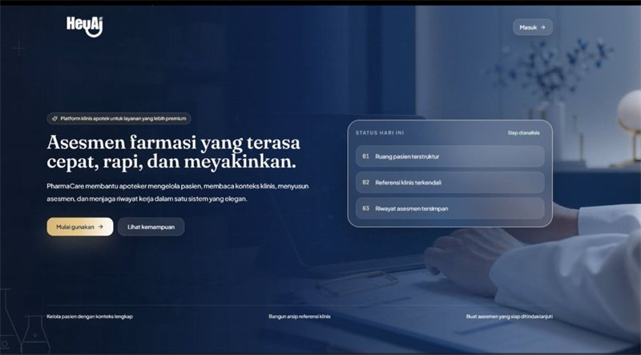

PharmaCare: Clinical Pharmacy & Drug Recommendation System
AI-assisted clinical pharmacy platform designed for hospital and healthcare pharmacists. Streamlines patient medication assessment, clinical context analysis, drug reference validation, and structured therapy recommendations with complete historical assessment tracking.